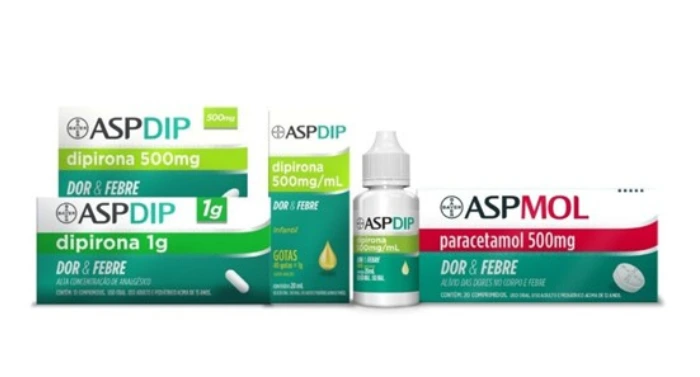

A dor mudou. A ASP também.
Dipirona e paracetamol com a assinatura da Bayer, a mesma da Aspirina desde 1897.
Escolha pelo princípio ativo.
Os clássicos da família.
Felix Hoffmann sintetiza o ácido acetilsalicílico nos laboratórios da Bayer.
Primeiro registro de venda de Aspirina no Brasil.
princípios ativos na família: AAS, dipirona e paracetamol.
equivalem a 1 mL de AspDip gotas, ou 500 mg de dipirona.
AspDip
Os cinco, lado a lado.
#ASPergunta
Dani Calabresa vira uma repórter que invade momentos do dia a dia, como o computador que trava ou a consulta no dentista, para fazer a pergunta que todo mundo responde do seu jeito.
- Estrela
- Dani Calabresa
- Mídia
- TV aberta, redes sociais e creators
- Assinatura
- Dos mesmos criadores da Aspirina. É Bayer, é bom.
A linha completa.

As embalagens reais
Topo branco com a cruz Bayer, a faixa da família (verde-limão no AspDip, vermelho e bordô no AspMol) e a base verde com “Dor & Febre”. As caixas 3D do site seguem esse desenho.
ASPIRINA
O ácido acetilsalicílico da Bayer, desde 1897. Escolha um produto para ver a embalagem e a ficha.
Apresentações conforme divulgação da Bayer e de farmácias. Leia sempre a bula.
De 1897 até a família Asp.
Arraste, role ou use as setas para atravessar mais de um século.
- 1897
A síntese
Nos laboratórios da Bayer, na Alemanha, o químico Felix Hoffmann obtém o ácido acetilsalicílico em forma pura e estável.
C₉H₈O₄ - 1899
Nasce a marca
Aspirina é registrada como marca em Berlim. A venda começa em pó, em frascos de vidro.
- 1900
O comprimido
Para facilitar o uso, surge o comprimido de 500 mg, a mesma dose do clássico até hoje.
500 mg - 1901
Chega ao Brasil
Primeiro registro de venda de Aspirina no país.
- 2022
125 anos
A marca celebra 125 anos como um dos medicamentos mais estudados do mundo.
- 2025
Nasce a família Asp
A Bayer lança AspDip (500 mg, 1 g e gotas 500 mg/mL) e AspMol (500 mg e 750 mg).
C₁₃H₁₆N₃NaO₄S · C₈H₉NO₂ - 2026
#ASPergunta
Com Dani Calabresa, a campanha leva os lançamentos para a TV aberta, as redes e o dia a dia.
Três princípios ativos.
Perguntas frequentes.
Direto na farmácia.
AspDip, AspMol e os clássicos da Aspirina nas principais redes do Brasil.
Links para as páginas dos produtos nas lojas on-line das redes. Preço e estoque são definidos por cada farmácia.